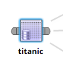
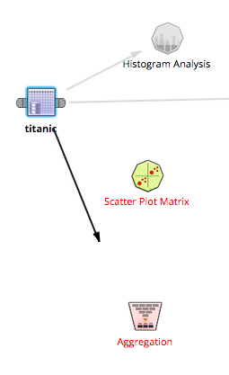
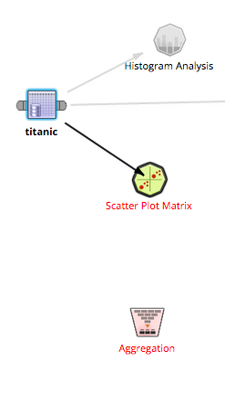
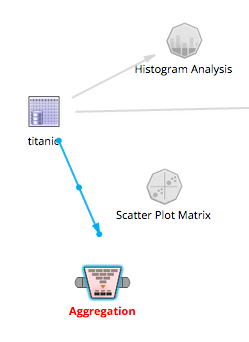

Connecting and Deleting Operators
- Creating Connections
- After dragging operators to the workflow editor from the Operator Explorer, the user can connect operators using the operator's 'ears'.

- Selecting an operator will reveal ears if the operator is not terminal. Click and drag an ear to create a connection arrow. Any operator with which
the current operator can have a legal connection will remain in color. Each operator with which a valid connection is not currently possible will fade to gray.

- To complete a connection, pull the arrow over the target operator; a black outline will indicate the target operator will receive the connection. Drop the arrow and the connection will be established.

- Deleting Connections
- To delete a connection, select the connection (indicated in blue) and click the dot located at the midpoint of the connection.
- Moving Connections
- To move a connection, select the connection (indicated in blue) and click and drag the dot located at either the head or tail of the arrow.
- As with creating a connection, the operators' color will indicate valid and invalid connections. Drop the arrow on a new, valid target or source operator to move the connection.

- Deleting Operators
- To delete an operator, select the operator (indicated by blue highlight) and click Delete in the operator toolbar. All connections to or from the selected operator will be removed when the operator is deleted.
- Alternatively, right-click an operator an choose Delete.

- Multiple operators can be selected using the control key (Windows/Linux) or command key (Mac OS X). Clicking delete will multiple operators selected will delete all selected operators and their connections.